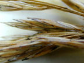
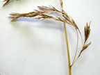

Tall fescue
Festuca arundinacea
Other names
Description
Coarse and tussocky grass, with clumps up to 1m or more tall. Leaves up to 800mm long, up to 10mm wide, dark green, rough margin. Auricles spreading, minutely hairy. Flowers large nodding panicles up to 25cm long. Spikelets may be purple stained.
Similar plants
Distribution
Common in damp pastures, boggy ground, and waste places in both Islands. Toxic tall fescue is most likely to be found beside roads and tracks. Bought cultivars are not normally toxic (note that bought cultivars will be replaced by the more competitive toxic varieties if they are also present).
Toxin
A fungus (Epichloe typhina) produces mycotoxins thought to be responsible for toxicity. Alkaloids (N acetylloline, N formylloline) are present but are not thought to be responsible for signs. The toxins have not been characterised. The fungus is usually on the leaves. Winter is the most likely time for intoxication due to the high water table favouring tall fescue.
Species affected
Predominantly cattle (not usually all in a herd though). Sheep rarely (seen near Foxton).
Clinical signs acute
Lameness (takes a few days to two weeks to develop), weight loss, drying and hardening of skin near hoof (dry gangrene). Varying amounts may dry up and fall off. Severe case may involve tip of tail and ears. Note that an Acremonium endophyte if present will cause reduced growth (by 15% to 50%), conception, milk production, and intolerance to heat. Dry gangrene of distal limbs.
Clinical signs chronic
Post mortem signs
Diagnosis
History and clinical signs.
Differential diagnosis
Ergot
Treatment
Symptomatic care and move to a safe pasture. Recovery fairly rapid if moved to new pasture.
Prognosis
Depends on severity of lesions at time of intervention.
Prevention
References
Conner H.E. The Poisonous Plants In New Zealand. 1992. GP Publications Ltd, Wellington
Hoveland, C.S. (1993) Importance and economic significance of the Acremonium endophytes to performance of animals and grass plant. From Joost, R. Quisenberry, S. "Acremonium/Grass interactions" Special issue of Agriculture, Ecosystems and Environment, Vol. 44 Nos. 1 4 Elsevier
Parton K, Bruere A.N. and Chambers J.P. Veterinary Clinical Toxicology, 2nd ed. 2001. Veterinary Continuing Education Publication No. 208
|
|
||
|
|
|
|
|
 |
 panicles |
|
|
|
|
|